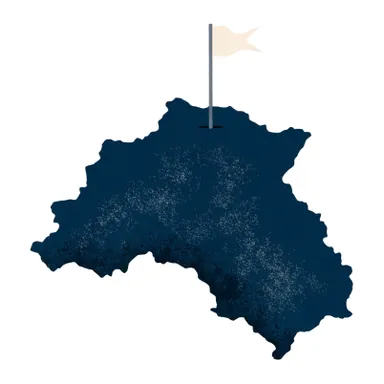
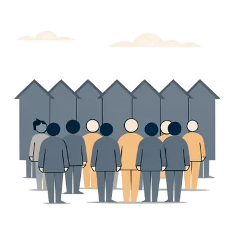
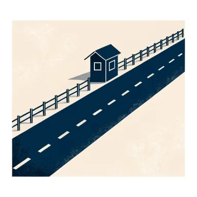
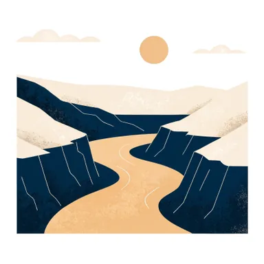
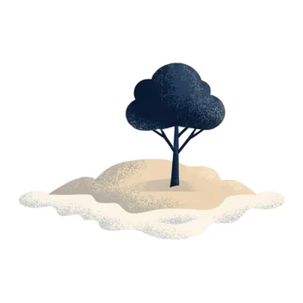
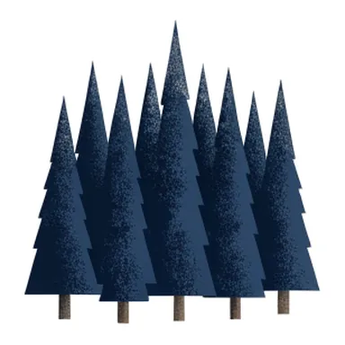
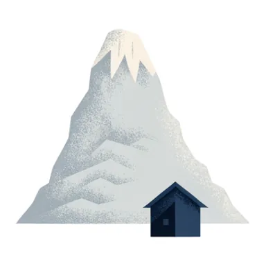
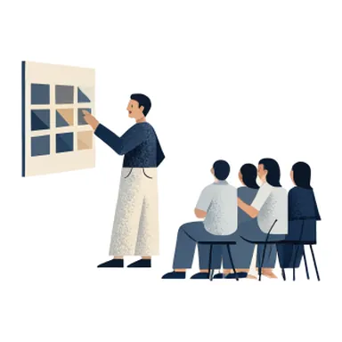

먼저 생각해 보세요.
Wien ist eine Stadt, die an der Donau liegt. 여기서 die는 무엇을 가리키나요?
die는 바로 앞의 명사 Stadt를 받아서 그 도시가 어떤 도시인지 설명해요.
수학여행을 며칠 앞두고 8b는 독일어를 쓰는 다른 나라를 알아봐요. Elif는 스위스를, Lukas는 오스트리아를 발표해요.
눌러서 들어 보세요.
먼저 생각해 보세요.
Wien ist eine Stadt, die an der Donau liegt. 여기서 die는 무엇을 가리키나요?
die는 바로 앞의 명사 Stadt를 받아서 그 도시가 어떤 도시인지 설명해요.
Lektion 3의 낱말 다섯 개를 다시 떠올려 보세요.
문법 Relativsätze im Nominativ (eine Stadt, die …), in der Schweiz, aus Österreich, Superlativ 복습
이 과를 마치면 나라와 도시를 소개하고, 명소를 설명하고, 짧게 발표할 수 있어요.
수업 시간이에요. Elif가 먼저 발표해요.
들으면서 찾아보세요. 스위스의 수도는 어디인가요?
이어서 Lukas가 발표해요.
들으면서 찾아보세요. 빈은 어느 강 가에 있나요?
두 대화를 듣고 답하세요.
스위스는 독일의 어느 쪽에 있나요?
Wie viele Sprachen gibt es in der Schweiz?
Zürich ist die Hauptstadt von der Schweiz.
Die Hauptstadt ist Bern.
Wie heißt das Geld in der Schweiz?
Welche Stadt liegt an der Donau?
Mozart kommt aus Wien.
Mozart ist ein Musiker, der aus Salzburg kommt.
오스트리아에서 가장 높은 산은 무엇인가요?
낱말 30개예요. 낱말이나 예문 앞의 단추를 누르면 소리가 나요. 명사는 der, die, das를 색으로 구분했어요.

das Land, die Länder 나라
Die Schweiz ist ein kleines Land.스위스는 작은 나라예요.
Europa 유럽
Deutschland liegt in Europa.독일은 유럽에 있어요.
Asien 아시아
Korea liegt in Asien.한국은 아시아에 있어요.
die Welt 세계
Ich möchte die Welt sehen.나는 세계를 보고 싶어요.

der Einwohner, die Einwohner 주민, 인구
Wien hat zwei Millionen Einwohner.빈에는 200만 명이 살아요.
die Million, die Millionen 백만
In Seoul wohnen fast zehn Millionen Leute.서울에는 천만 명 가까이 살아요.
die Sprache, die Sprachen 언어
Yuna spricht drei Sprachen.Yuna는 세 가지 언어를 해요.

die Grenze, die Grenzen 국경
Die Stadt liegt an der Grenze.그 도시는 국경에 있어요.
der Franken, die Franken 프랑 (스위스 돈)
Das kostet zehn Franken.그건 10프랑이에요.

der Fluss, die Flüsse 강
Der Rhein ist ein langer Fluss.라인강은 긴 강이에요.
der See, die Seen 호수
Wir schwimmen im See.우리는 호수에서 수영해요.
fließen, ist geflossen 흐르다
Der Rhein fließt durch Köln.라인강은 쾰른을 지나 흘러요.

die Insel, die Inseln 섬
Jeju ist eine Insel.제주는 섬이에요.

der Wald, die Wälder 숲
Wir gehen im Wald spazieren.우리는 숲에서 산책해요.
der Norden 북쪽
Hamburg liegt im Norden.함부르크는 북쪽에 있어요.
der Süden 남쪽
München liegt im Süden.뮌헨은 남쪽에 있어요.
der Osten 동쪽
Berlin liegt im Osten.베를린은 동쪽에 있어요.
der Westen 서쪽
Köln liegt im Westen.쾰른은 서쪽에 있어요.
südlich von ~의 남쪽에
Die Schweiz liegt südlich von Deutschland.스위스는 독일 남쪽에 있어요.

hoch 높은
Der Berg ist sehr hoch.그 산은 아주 높아요.
bekannt 유명한, 잘 알려진
Köln ist für den Dom bekannt.쾰른은 대성당으로 유명해요.
besonders 특히
Die Berge sind besonders schön.산이 특히 아름다워요.

das Referat, die Referate 발표
Elif hält ein Referat.Elif가 발표를 해요.
das Thema, die Themen 주제
Mein Thema ist die Schweiz.제 주제는 스위스예요.
vorstellen, hat vorgestellt 소개하다
Ich stelle heute Wien vor.저는 오늘 빈을 소개해요.
der Musiker, die Musiker 음악가
Mozart ist ein bekannter Musiker.모차르트는 유명한 음악가예요.
mehr als ~보다 많이, ~ 넘게
Der Berg ist mehr als 4000 Meter hoch.그 산은 높이가 4000미터가 넘어요.
die Leute (Pl.) 사람들
In Wien wohnen viele Leute.빈에는 사람이 많이 살아요.
Servus! 안녕! (오스트리아)
Servus, Paul!안녕, Paul!
Grüezi! 안녕하세요! (스위스)
Grüezi! Wie geht es Ihnen?안녕하세요! 어떻게 지내세요?
이 과의 낱말로 여덟 문제를 풀어요.
예문을 보고 답해 보세요.
관계문에서 동사는 어디에 있나요?
규칙
명사를 문장으로 더 자세히 설명할 때 관계문을 써요. 명사 바로 뒤에 쉼표를 찍고 der, die, das를 쓴 다음, 동사를 맨 끝에 둬요. der, die, das는 앞 명사의 성을 따르고, 복수는 die예요.
| 명사 | 관계문 |
|---|---|
| der Berg | ein Berg, der sehr hoch ist |
| die Stadt | eine Stadt, die an der Donau liegt |
| das Land | ein Land, das in Asien liegt |
| die Länder (복수) | zwei Länder, die neben Deutschland liegen |
주의 두 문장을 하나로 묶는다고 생각하면 쉬워요. Wien ist eine Stadt. Sie liegt an der Donau. → Wien ist eine Stadt, die an der Donau liegt.
예문을 보고 답해 보세요.
나라 이름 Schweiz 앞에는 무엇이 있나요?
규칙
나라 이름은 대부분 관사 없이 써요. 하지만 die Schweiz, die Türkei처럼 관사가 붙는 나라가 있어요. 이런 나라는 '~에서'를 in der, '~로'를 in die, '~에서 왔다'를 aus der로 말해요.
| 물음 | 관사 없는 나라 | 관사 있는 나라 |
|---|---|---|
| Wo? 어디에 | in Österreich, in Korea | in der Schweiz, in der Türkei |
| Wohin? 어디로 | nach Österreich, nach Korea | in die Schweiz, in die Türkei |
| Woher? 어디에서 | aus Österreich, aus Korea | aus der Schweiz, aus der Türkei |
주의 미국은 die USA이고 복수예요. 그래서 in den USA, in die USA, aus den USA라고 해요.
예문을 보고 답해 보세요.
am größten을 명사 Stadt 앞에 쓰면 어떻게 되나요?
규칙
A2.1에서 am größten, am höchsten을 배웠어요. 최상급을 명사 앞에 쓸 때는 am을 빼고 der, die, das와 함께 써요. 끝은 -ste이고, 1격에서는 성과 상관없이 같은 모양이에요.
| 원급 | 비교급 | 최상급 | 명사 앞 |
|---|---|---|---|
| groß | größer | am größten | die größte Stadt |
| hoch | höher | am höchsten | der höchste Berg |
| lang | länger | am längsten | der längste Fluss |
| bekannt | bekannter | am bekanntesten | das bekannteste Museum |
| gut | besser | am besten | das beste Eis |
주의 hoch는 비교급에서 c가 빠져요. hoch – höher – am höchsten. -t로 끝나는 형용사는 e를 넣어 bekannteste라고 해요.
Yuna가 한국을 소개해요. 듣고 답하세요.
Yunas Referat: Korea
Yuna Mein Thema ist Korea. Korea ist ein Land, das in Asien liegt.
Yuna Die Hauptstadt ist Seoul. Seoul ist eine Stadt, die fast zehn Millionen Einwohner hat.
Yuna Durch Seoul fließt ein Fluss, der Han heißt.
Yuna Der höchste Berg in Südkorea heißt Hallasan. Er liegt auf der Insel Jeju.
Yuna Jeju ist eine Insel, die im Süden liegt. Dort machen viele Leute Ferien.
Wie viele Einwohner hat Seoul?
Wie heißt der Fluss in Seoul?
Der höchste Berg in Südkorea liegt in Seoul.
Er liegt auf der Insel Jeju.
제주는 한국의 어느 쪽에 있나요?
듣고 알맞은 것을 고르세요.
Elif는 라인강이 어떻다고 하나요?
Der Rhein ist der längste Fluss in Deutschland.
Lukas의 할머니는 어디에 사나요?
Meine Oma wohnt in einer Stadt, die an der Nordsee liegt.
Emma네는 여름에 어디로 가나요?
Im Sommer fahren wir in die Schweiz.
Paul은 지금 어디에 사나요?
Paul kommt aus Österreich, aber er wohnt seit einem Jahr in Köln.
Paul이 반 블로그에 고향 빈을 소개했어요. 읽고 답하세요.
Meine Stadt: Wien
Ich komme aus Wien. Wien ist die Hauptstadt von Österreich und hat ungefähr zwei Millionen Einwohner.
Wien ist eine Stadt, die für Musik bekannt ist. Mozart und Beethoven haben hier gewohnt.
Mein Lieblingsplatz ist der Prater. Das ist ein Park, der sehr groß ist. Dort gibt es ein Riesenrad, das mehr als hundert Jahre alt ist.
In Wien isst man gern Schnitzel. Das Wiener Schnitzel ist das bekannteste Essen aus Österreich.
Im Winter fahre ich mit meiner Familie in die Berge. Österreich ist ein Land, das viele hohe Berge hat.
Wofür ist Wien bekannt?
Im Prater gibt es ein Riesenrad, das sehr alt ist.
Was ist das bekannteste Essen aus Österreich?
Paul은 겨울에 가족과 무엇을 하나요?
세 나라를 견준 표예요. 보고 답하세요.
D-A-CH in Zahlen
| Land | Hauptstadt | Einwohner | Höchster Berg |
|---|---|---|---|
| Deutschland | Berlin | 84 Millionen | Zugspitze, 2962 Meter |
| Österreich | Wien | 9 Millionen | Großglockner, 3798 Meter |
| Schweiz | Bern | 9 Millionen | Dufourspitze, 4634 Meter |
Welches Land hat die meisten Einwohner?
In welchem Land liegt der höchste Berg?
Die Zugspitze ist höher als der Großglockner.
Die Zugspitze ist 2962 Meter hoch, der Großglockner 3798 Meter.
오스트리아의 수도는 어디인가요?
der, die, das 가운데 알맞은 것을 고르세요.
Wien ist eine Stadt, an der Donau liegt.
Die Schweiz ist ein Land, vier Sprachen hat.
Das Matterhorn ist ein Berg, sehr bekannt ist.
Der Rhein ist ein Fluss, durch Köln fließt.
Jeju ist eine Insel, im Süden liegt.
Das sind zwei Länder, neben Deutschland liegen.
복수는 die예요.
두 문장을 하나로 묶었어요. 알맞은 동사 자리를 고르세요.
Salzburg ist eine Stadt, die für Mozart bekannt .
Das ist ein See, der im Süden .
Paul ist ein Schüler, der aus Wien .
Ich kenne zwei Mädchen, die in der Schweiz .
Das ist ein Berg, der sehr hoch .
나라 이름 앞에 올 알맞은 말을 고르세요.
Elifs Oma wohnt in Türkei.
Elif의 할머니는 튀르키예에 살아요.
Im Winter fahren wir Österreich.
겨울에 우리는 오스트리아로 가요.
Im Sommer fahren wir Schweiz.
여름에 우리는 스위스로 가요.
Die Schokolade kommt Schweiz.
그 초콜릿은 스위스에서 왔어요.
Paul kommt Österreich.
Paul은 오스트리아에서 왔어요.
Yuna wohnt jetzt Deutschland.
Yuna는 지금 독일에 살아요.
최상급을 알맞게 고르세요.
Zürich ist die Stadt in der Schweiz.
Der Berg in Deutschland heißt Zugspitze.
Der Rhein ist der Fluss in Deutschland.
Im Sommer ist es am .
명사가 뒤에 없으면 am …sten이에요.
Das ist das Eis in Köln.
낱말을 순서대로 눌러 문장을 만드세요.
빈은 도나우강 가에 있는 도시예요.
마터호른은 아주 높은 산이에요.
취리히는 스위스에서 가장 큰 도시예요.
Paul은 오스트리아에서 왔어요.
낱말과 뜻을 짝지으세요.
듣고 그대로 써 보세요.
Mein Thema ist die Schweiz. 제 주제는 스위스예요.
Die Hauptstadt ist Wien. 수도는 빈이에요.
Was ist dort besonders bekannt? 거기서는 뭐가 특히 유명해요?
Mein Thema ist … 제 주제는 ~입니다.
Ich stelle heute … vor. 저는 오늘 ~을 소개합니다.
Zuerst zeige ich die Karte. 먼저 지도를 보여 드릴게요.
… liegt südlich von Deutschland. ~은 독일 남쪽에 있어요.
Die Hauptstadt ist … 수도는 ~이에요.
… hat zwei Millionen Einwohner. ~에는 200만 명이 살아요.
Man spricht dort Deutsch. 거기서는 독일어를 써요.
… ist eine Stadt, die … ~은 ~하는 도시예요.
… ist besonders bekannt. ~이 특히 유명해요.
Der höchste Berg heißt … 가장 높은 산은 ~예요.
Das war mein Referat. 제 발표는 여기까지입니다.
Habt ihr Fragen? 질문 있어요?
Danke fürs Zuhören! 들어 주셔서 감사합니다!
대화 B에서 역할을 하나 고르세요. 상대의 말은 음성으로 나오고, 내 차례에는 직접 말해요.
내가 사는 도시나 고향을 소개하는 문장을 만들어 보세요. 완성된 문장을 소리 내어 읽어 보세요.
Ich wohne in Bucheon. Die Stadt liegt im Westen von Korea.
Bucheon ist eine Stadt, die neben Seoul liegt.
Die Stadt ist für Comics bekannt.
Mein Kurzreferat
나라나 도시 하나를 골라 짧은 발표문을 써 보세요. 일곱 문장쯤 써요.
Mein Thema ist Korea. Korea ist ein Land, das in Asien liegt. Die Hauptstadt ist Seoul. Seoul ist eine Stadt, die fast zehn Millionen Einwohner hat. Der höchste Berg in Südkorea heißt Hallasan. Jeju ist eine Insel, die für das Meer und die Berge bekannt ist. Das war mein Referat. Habt ihr Fragen?
다 쓴 뒤에 확인해 보세요.
Ich kann ein Land oder eine Stadt vorstellen.나라나 도시를 소개할 수 있어요.
Ich kann etwas mit einem Relativsatz genauer beschreiben.관계문으로 더 자세히 설명할 수 있어요.
Ich kann ein kurzes Referat halten.짧게 발표할 수 있어요.